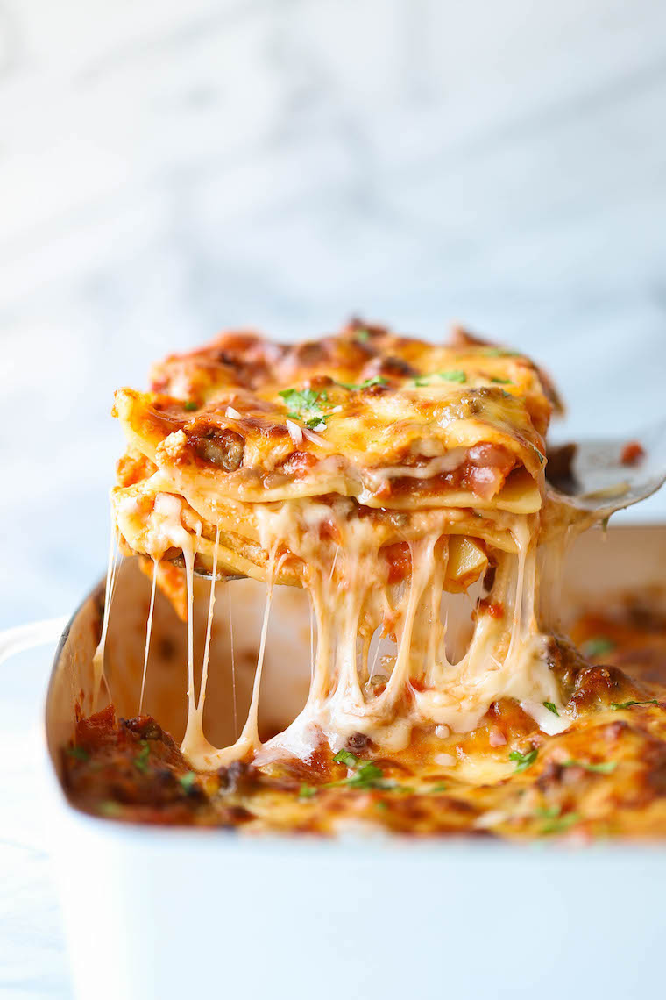

Easiest Lasagna Ever
Nothing beats classic lasagna. And this is th easiest recipe you will ever make.
It can be made ahead and it's freezer-friendly too!
A clasic homemade lasagna that only requires 20min prep time.

Ingredients:
- 9 lasagna noodes
- 1 Tbs olive oil
- 500g ground beef*
- 1 onion, diced
- Salt and freshly grounded black pepper, to taste
- 2 400g can crushed tomatoes
- 1 tablespoon Italian seasoning
- 400g whole milk ricotta
- 3 1/2 cups shredded mozzarella, divided
- 1 large egg, beaten
- 1/4 cup freshly grated Parmesan
- 2 tablespoons chopped fresh parsley leaves
Directions:
- Preheat oven to 180C. Lightly oil a 33x23cm baking dish or coat with nonstick spray.
- In a large pot of boiling salted water, cook lasagna noodles according to package instructions.
- Heat olive oil in a large skillet over medium high heat. Add ground beef and onion and cook until beef is browned,
about 3-5 minutes, making sure to crumble the beef as it cookes; season with salt and pepper, to taste. Drain
excess fat. Stir in tomatoes and Italian seaoning until well combined.
- In a medium bowl, combine ricotta, 1/2cup mozzarella and egg; set aside.
- Spread 1 cup tomato mixture onto the bottom of the baking dish; top with 3 lasagna noodles, 1/2 of the ricotta cheese mixture
and 1 cup mozzarella cheese. Repeat with a second layer. Top with remaining noodles, tomato mixture, 1 cup mozzarella cheese
and Parmesan.**
- PLace into oven and bake for 35-45 minutes, or wuntil bubbling. Then broil for 2-3 minutes, or until top is browned in spots.
- Let cool 15 minutes. Serve, garnished with parsley, if desired
Notes:
*Italian pork susage can be substituted.
**MAKE_AHEAD: COver tightly with plastic wrap. Refrigerate up to 24hours. To bake, remove plastic wrap, cover and bake for
40 minutes. Uncover; bake for an additional 10-15 minutes, or until top is browned in spots.
***TO FREEZE: Cover lasagna with plastic wrap, then alumnium foil. Freexe up to 3 months. To bake, remove plastic wrap,
cover and bake for 90 minutes. Uncover; bake for an additional 10-15 minutes, or until completely cooked through.